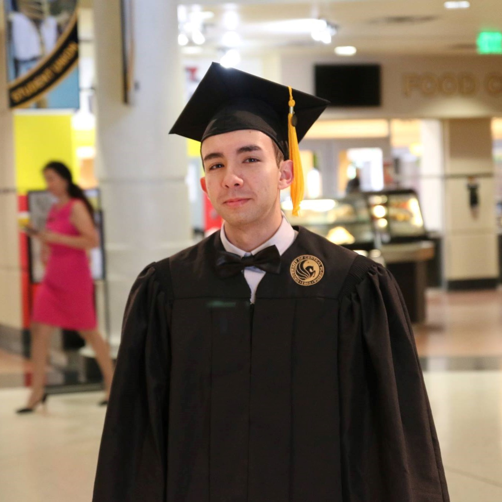

I am a University of Central Florida graduate with a bachelor's degree in chemistry currently working
as a phlebotomist at BioLife Plasma Services. My during my studies, I focused on biochemistry and
medical-related coursework. I enjoy organic chemistry the most, and I love the natural sciences. I am
now learning coding through the UCF Bootcamp. My desire to learn and work with technology fuels me
to work hard and make the most of every opportunity I can grab.
I love playing videogames and even building computers - so far I have built four computers, and each one leaves me feeling pround when I start them up and everything works according to expectations. My favorite game is a MOBA called League of Legends, which I have played longer than any other game. I also love music, with Troye Sivan being my favorite artist and Twenty-One Pilots my favorite band. I recently saw Sivan in concert and plan on seeing Twenty-One Pilots in 2019.
Learning coding so far has been an exciting journey. In just the first week I felt like a lot was learned, and I am looking forward to continue learning. The amazing thing about learning is that it is a never ending process, and I can see that the same is true for coding. The course is helpful because it creates a structured learning environment with countless resources available for success. It builds into the fact that working in the real-world is a collaborative process so teamwork is essential. Also essential is the ability to think through problems, evaluate the situation, and find the answer - I will not always know the answer, but as long as I know how to get the answer then things will work out.
I love playing videogames and even building computers - so far I have built four computers, and each one leaves me feeling pround when I start them up and everything works according to expectations. My favorite game is a MOBA called League of Legends, which I have played longer than any other game. I also love music, with Troye Sivan being my favorite artist and Twenty-One Pilots my favorite band. I recently saw Sivan in concert and plan on seeing Twenty-One Pilots in 2019.
Learning coding so far has been an exciting journey. In just the first week I felt like a lot was learned, and I am looking forward to continue learning. The amazing thing about learning is that it is a never ending process, and I can see that the same is true for coding. The course is helpful because it creates a structured learning environment with countless resources available for success. It builds into the fact that working in the real-world is a collaborative process so teamwork is essential. Also essential is the ability to think through problems, evaluate the situation, and find the answer - I will not always know the answer, but as long as I know how to get the answer then things will work out.